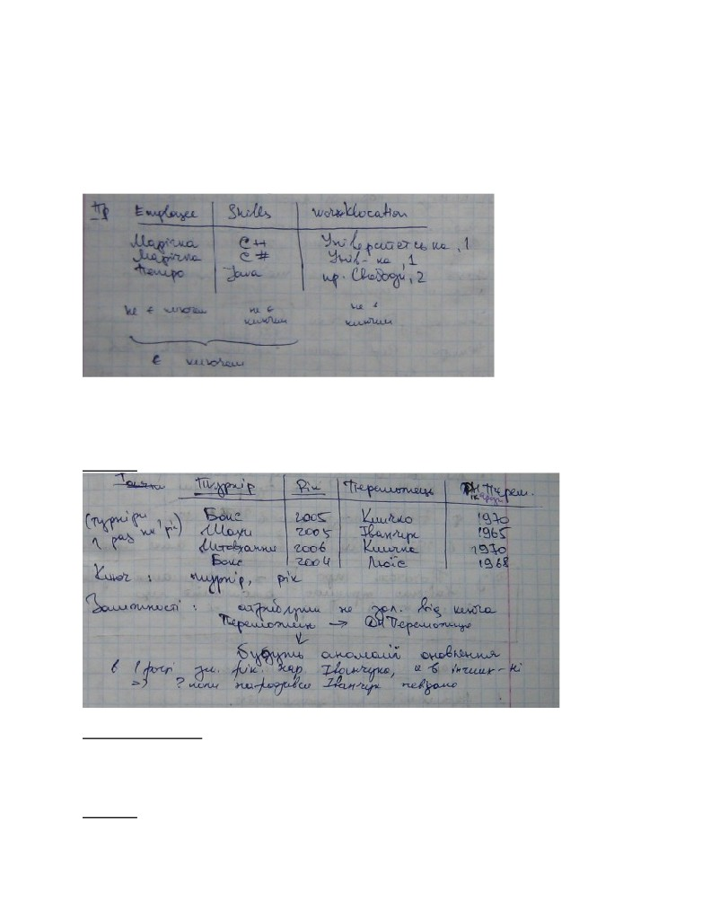

1.
Означення та основні завдання бази даних та СКБД
a) На сьогодні бази даних використовуються у переважній більшості джерел даних,
пошук даних, аналіз даних переважно використовується за допомогою баз даних,
наукові та медичні бази даних.
b) Програмування баз даних вико(ристовує неповні мови програмування за
Тьюрінгом і спричинює багато цікавих пр(облем, пов’язаних з оптимізацією
запитів.
c) Бази даних є всюди(
d) Часто виникають проблеми си(нхронізації та одночасного доступу до баз даних
e) Файлова система одна з найпр(остіших баз даних
(
База даних
- це впорядкований набір
(логічно взаємоповязаних даних, що
використовується спільно та призн(ачени й для задоволення інформаційних потреб
користувачів. В це поняття також( включається система керування базами даних
-
комп'ютерна програма чи комплекс( програм, що забезпечує користувачам можливість
створення, збереження, оновлення, п’шуку інформації та контролю доступу в базах даних.
(&
Основне завдання СКБД - гарантова(не збереження значних обсягів інформації та надання
доступу до неї користувачеві або прикладній програмі, таким чином СКБД складається з
двох частин: інформації та системи керування інформацією.
Якщо говорити більш детально, то ось перелік основних функцій СКБД: керування
даними в зовнішній пам'яті
(на дисках); керування даними в оперативній пам'яті
з використанням дискового кешу; ведення журналу змін, резервне копіювання та
відновлення бази даних після збоїв; підтримка мов БД (мова визначення даних, мова
маніпулювання даними).
Основні СКБД поділяються на: комерційні - Oracle, Informix, MS SQL Server, та з
відкритим кодом - MySQL, Firebird, Postgre Sql.
2.
Поняття моделі даних. Реляційна та ієрархічна моделі
Модель даних - формальне представлення за допомогою якоїсь нотації даних та їх
структур. Іншими словами, модель даних
- це опис, як зберігати дані(реляційно,
ієрархічно(напівструктуровано)).
Наприклад, у реляційних моделях
- таблиці, у
напівструктурованих - графи, дерева.
Модель даних - це:
● формальне представлення даних
● операції над даними(SQL)
● обмеження на дані
Реляційна модель - запропонована в 1971 р. Е. Коддом (E. Codd) в якості однієї з
альтернатив у розв'язанні проблем створення та опрацювання баз даних великих об'ємів.
Принциповим моментом реляційної моделі є застосування табличного способу подання
даних. Таблиця в свою чергу є зовнішнім зображенням відношення
(relation) засобу
поєднання значень з кількох множин. Перевагами реляційної моделі є:
·
простота та природність табличної форми зображення даних;
·
незалежність методів та процедур опрацювання від обсягів баз даних;
·
можливість визначення зв'язків між даними через самі дані;
·
наявність теоретичного обґрунтування методів та технологій роботи з
реляційними базами даних.
На сьогодні більшість технологій та систем управління базами даних реалізовані на основі
реляційної моделі.
зміст атрибута - зображення однієї властивості сутностей певного класу;
зміст кортежу - зображення значень властивостей одного примірника сутності заданого
класу;
Схема відношення - це назва таблиці та список її атрибутів(колонки таблиці, можливо з їх
типами).
Приклад: Sweet(name, manufacturer)
People(name, address, phone)
Тут БД - це множина відношень(таблиць). Схема БД - це множина схем відношень.
Напівструктуровані(ієрархічні) дані - інша модель даних, базується на деревах, графах.
Однією з переваг є логічне представлення ієрархічних даних. Вузли є об’єктами, на ребрах
- написи, що є аналогом атрибутів у реляційній моделі, а значення об’єктів - на листках.
Немає обмежень на кількість нащадків певного вузла і на кількість написів.
Ієрархічна модель запропонована в
1964 р. в СУБД IMS/360 фірми IBM. Модель
передбачає впорядкування даних за принципом ієрархії:
· всі одиниці даних класифікуються за рівнями ієрархії;
· до найвищого рівня ієрархії входить лише один елемент;
·
зв'язки встановлюються лише між елементами сусідніх рівнів з підпорядкуванням
від вищого до нижчого;
· кожен елемент нижчого рівня пов'язується лише з одним елементом вищого рівня;
·
елемент початкового рівня ієрархії не може підпорядковуватися жодним іншим
одиницям;
· елементи останнього рівня ієрархії не мають підпорядкованих елементів даних.
Ієрархічна модель дозволяє використання лише зв'язків типу 1:1 та 1:N. Схема зв'язків між
даними в ієрархічній моделі може бути зображена у вигляді деревовидного графу.
Іншим способом представлення є XML.
3.
Реляційна алгебра: означення та основні операції
Алгебра - це математична система, яка складається з операнд (змінні або значення, з
яких можна отримувати нові значення) та операторів(символи, що позначають дію над
операндами та результатом яких є нові операнди).
Реляційна алгебра оперує над відношеннями(таблицями). Оператори визначені таким
чином, щоб визначати базові дії над таблицями. Результат використання цієї алгебри -
мова запитів для відношення.
Основні операції реляційної алгебри:
1. перетин(∩), об’єднання(∪) та різниця(∕)
2. вибір(вибір певних рядків), проекція(вибір певних колонок)
3. множення та з’єднання
4. перейменування відношень та їх атрибутів
Результатом усіх цих операцій є відношення.
Перетин відношень R1 і R2
Об’єднання відношень R1 і R2
Різниця відношень R1 і R2
Вибір(селекція (
) - вибрати певні рядки)
,
де с - умова вибору рядків R2, які попадуть в R1
Проекція (
) - вибрати певні колонки
,
R1 будується переглядом кожного рядку з R2 та вибором атрибутів лише тих, які є в l у
заданій послідовності. Видаляє однакові рядки.
Розширена проекція: перелік атрибутів l може містити певні вирази з атрибутами.
Добуток(декартовий добуток( ))
,
кожен ряок з першої таблиціоб’єднується з кожним рядком з другої таблиці. Схемою
добутку є список результатів, який складається з атрибутів R1 і R2
З’єднання(
-з’єднання)
c - умова на вибір рядків. Виконується як вибір з умовою c від добутку
, тобто
Природне з’єднання
еквівалентне
-з’єднанню з умовою рівності атрибутів з однаковим іменем. Якщо немає
однакових назв колонок, то буде просто табличка без рядків.
Перейменування
дозволяє перейменувати атрибути відношення
, називаючи їх
відповідно.
4.
Побудова складних виразів та дерева виразів у реляційній алгебрі
Алгебра - це математична система, яка складається з операнд (змінні або значення, з
яких можна отримувати нові значення) та операторів(символи, що позначають дію над
операндами та результатом яких є нові операнди).
Реляційна алгебра оперує над відношеннями(таблицями). Оператори визначені таким
чином, щоб визначати базові дії над таблицями. Результат використання цієї алгебри -
мова запитів для відношення.
Основні операції реляційної алгебри:
1. перетин(∩), об’єднання(∪) та різниця(∕)
2. вибір(вибір певних рядків), проекція(вибір певних колонок)
3. множення та з’єднання
4. перейменування відношень та їх атрибутів
Операції об’єднуємо за допомогою дужок. Використовуємо пріоритет операції. Можемо
зоображати дії за допомогою дерева.
Пріоритети операцій:
1.
,
,
(перейменування, проекція, вибір)
2.
,
(добуток, з’єднання)
3.
∩ (перетин)
4.
∪, (об’єднання та різниця)
Вирази у реляційній алгебрі можна представляти деревами, де листки - операнди, а
внутрішні вузли - оператори.
Приклад такого виразу: використовуючи відношення Bars(name, address) та
Sells(name,beer,price) знайти назви всіх барів, які знаходяться на Mape Str, або, які
продають Bud менше, ніж за 3.00.
5.
Поняття ER-діаграми. Її складові (сутності, атрибути, множини сутностей,
відношення, множини відношень)
Найбільш поширеним засобом моделювання даних є так звані діаґрами
“сутність-
взаємозв'язок”, їх ще називають ER-діаграмами.
ER-діаграма(Entity Relationship Model)
- це діаграма, яка зображає описи сутностей,
атрибутів та відношень.
Entity - сутність; Relationship - відношення.
Існує декілька способів побудови таких діаграм(нотації), найбільш відомими з яких є
нотації Чена, IDEF1X, та Crow’s Foot.
Сутність - це якась річ або об’єкт.
Сутність
- абстракція, якою позначається будь який об’єкт, суб’єкт, предмет, процес,
явище, тощо
(прототип сутності), що може бути однозначно ідентифікованим за
множиною своїх ознак або властивостей. Один і той самий фізичний об'єкт може
виступати прототипом різних сутностей.
Множина сутностей - набір подібних сутностей(подібно до класу в ОО мовах). Іншими
словами це множини всіх елементів, які є у цій сутності, наприклад, список всіх магазинів
у множині сутностей Shops.
Множина сутностей
- множина понять, що мають спільну природу та володіють
однотипними наборами властивостей.
Зазвичай, множини сутностей зображають прямокутниками.
Атрибут - це властивість кожної із сутностей з множини сутностей. Атрибутами є прості
типи: числовий тип, рядок, а не структура, не множина, не таблиця.
Атрибут
- поняття, яким умовно позначають одну з властивостей сутності. Атрибут
поєднує ідентифікатор, що вказує на зв’язок його з певною ознакою множини сутностей
і множину значень цих ознак, якими володіють примірники сутностей цього класу.
Атрибут є узагальненням, і його асоціюють з класом сутностей, значення атрибуту є
конкретизацією і асоціюється з примірником.
Атрибути зображають овалами або кругами.
Відношення - це набір рядків із одним компонентом для кожної з сутностей, які вони
пов’язують.
Відношення
- стійка відповідність між примірниками сутностей декількох множин,
що є наслідком взаємодії прототипів цих сутностей в предметній області. Відношення
відображають взаємодію сутностей різних класів у певних процесах. Вони є засобами
утворення структур даних.
Відношення позначають ромбами із лініями до множин сутностей, які воно пов’язує.
Відношення може об’єднувати декілька сутностей.
Всередині фігур вказують їхні імена, лінії - пов’язують з сутностями, в описі відношення
задають його ідентифікатор як тип.
Приклад ER-діаграми.
Sells: пиво продається в барах;
Frequency: люди відвідують бари:
Likes: люди люблять певне пиво.
Мета використання ER-діаграм:
1. ER-діаграми дозволяють швидко зобразити бази даних, позначити певні обмеження,
проте на ній неможливо вказати дії над даними.
2. ER-діаграми служать перехідним містком між замовниками та програмістами.
3. ER-діаграми використовуються як перший стан творення баз даних.
6.
Типи відношень, що пов’язують багато сутностей та їх відображення на ER-
діаграмах
Існує три типи відношень: один-до-одного, при якому кожний рядок таблиці пов'язаний
з нулем або одним рядком іншої таблиці; один-до-багатьох, при якому кожний рядок
таблиці пов'язаний з нулем, однією або декількома рядками іншої таблиці, і багато-
до-багатьох, при якому кожний рядок першої таблиці пов'язаний з нулем, однією або
декількома рядками другої таблиці, а кожен рядок другої таблиці може бути пов'язаний з
нулем, однією або декількома рядками першої таблиці.
Відношення один до одного.
Такого типу відношення зустрічаються досить рідко. Кожна сутність з одної множини
сутностей може бути з’єднана не більше як із одною сутністю з іншої множини сутностей.
На приклад, відношення BestSeller. Одни виробник має одне пиво, яке найкраще
продається. Кожне пиво має одного виробника і є або не є BestSeller-ом.
Відношення багато до одного.
Кожна сутність першої множини поєднана не більше як з одною сутністю другої
множини. Сутність з другої множини може бути з’єднана з декількома сутностями з
першої множини.
Відношення багато до багатьох.
У такому відношенні кожна сутність може бути з’єднана з нулем, одною або багатьма
іншими сутностями.
Приклад. Магазин продає різні цукерки, конкретна марка цукерок продається в різних
магазинах. Тобто Sells(Shop,Sweet) є відношенням типу багато до багатьох.
Відображення відношень «багато» на діаграмах.
Відношення багато до одного позначається стрілкою, яка вказує на сутність «1».
Відношення один до одного позначається стрілкою з обох боків.
Якщо сутність входить у відношення точно один раз, тоді малюємо замальовану стрілку,
інакше - звичайну.
Приклад ER-діаграми із відношенням один до одного.
Приклад ER-діаграми із відношенням багато до одного(1 пиво має багато шанувальників):
7.
Перетворення ER-діаграм у відношення. Основні підходи до утворення
підкласів
Перетворення ER-діаграм у відношення.
1.
Множина сутностей перетворюються у відношення(таблицю);
2.
Атрибути сутностей - у атрибути(колонки цієї таблиці);
3.
Зв’язки між сутностями теж перетворюються у таблицю з
атрибутами(колонками), які є ключами пов’язуваних сутностей.
Відношення переходять в окремі таблиці, де атрибутами будуть ключі пов’язаних
таблиць.
У одне відношення можна поєднувати сутність та відношення зв’язку, яке поєднує цю
сутність.
Основні підходи до утворення підкласів:
1. ОО-підхід: одне відношення на кожен підклас, у кожному відношенні присутні
атрибути як підкласу, так і батьківського класу;
2. з NULL: одне відношення з атрибутами всіх підкласів, якщо рядок не має
певного атрибуту, то пишемо NULL;
3. ER-підхід: одне відношення на кожен підклас і використання лише ключового
атрибута батьківського класу.
8.
Структура запиту SELECT: синтаксис, опис виконання запиту, короткий
опис кожної складової запиту.
SQL:
1.
це мова взаємодії із системами керування БД;
2.
описує що потрібно, а не як отримати;
3.
алгоритм виконання конкретног запиту може бути підлаштований для
оптимального виконання динамічно.
Стуктура запиту SELECT.
SELECT вирази із атрибутами
[FROM таблиці]
[ WHERE умови на рядки ]
додаткові частини:
[ GROUP BY групувати по умові ]
[ HAVING умови на рядки ]
[ ORDER BY сортувати по умові [ ASC | DESC ] ]
Приклади: SELECT 2+2
SELECT CURRENTTIME
Приклад. Маємо відношення Sweets(name, manufacturer). Знайти назви цукерок, які
виробляє Рошен.
SELECT name
FROM Sweets
WHERE manufacturer = “Рошен”
Виконання.
Виконання починається з частини FROM використовуючи вибір за умовою WHERE,
застосовується розширена проекція за атрибутами SELECT.
Можна розуміти виконання запиту і так: відвідуємо кожен рядок відношення у FROM,
перевіряємо чи поточний рядок задовільняє умові у WHERE. Якщо так, то обчислюють
атрибути, задані у SELECT.
SELECT *.
* у частині SELECT означає вибрати всі атрибути без змін.
Приклад. SELECT *
FROM Sweets
WHERE manufacturer = “Рошен”
Перейменування атрибутів.
Якщо після назви атрибуту написати AS та нове ім’я, то результуюче відношення буде
мати нове ім’я
Приклад. SELECT name AS sweet, manufacturer
FROM Sweets
WHERE manufacturer = “Рошен”
WHERE.
Частина WHERE може містити різні булівські вирази із операціями
типу ‘>’, ’<’, ’>=’,
’<=’,
’!=’(‘<>’),
’=’, AND, OR та інші операції булівського типу.
Параметр WHERE в мові SQL виконує фільтрацію рядків які отримуються після запиту, в
відповідності з заданими умовами. Умови задаються предикатами.
GROUP BY.
GROUP BY гуртує рядки, що мають спільну властивість таким чином, щоб функція
агрегації(MAX, SUM, AVG, …) могла бути застосована до кожної групи.
HAVING .
HAVING — необов'язковий параметр оператора SELECT для зазначення умови на
(MAX, SUM, AVG, …). HAVING <умови> подібний
до WHERE <умови> за винятком того, що рядки відбираються не за значенням
стовпців, а будуються зі значень стовпців вказаних в GROUP BY і значень агрегатних
функцій, обчислених для кожної групи, утвореної GROUP BY. Якщо GROUP BY не
використовується, HAVING поводить себе як WHERE.
ORDER BY.
в результаті інструкції SELECT, рядки (кортежі) можуть бути відсортовані за значеннями
одної або декількох колонок (атрибутів). Критеріями сортування можуть бути назви
обчислюються і результати використовуються для сортування.
FROM -> WHERE -> GROUP BY -> HAVING -> SELECT -> ORDER BY
9.
Значення NULL та порівняння значень з NULL у SQL (тернарна логіка)
Значення атрибуту певного рядка може бути NULL. Використання NULL залежить від
контексту. Це може означати, що ми наразі не знаємо значення поля. Наприклад, адреса
певної людини. Або якщо значення атрибуту не має жодного сенсу для даного рядка.
Наприклад для відношень типу ‘is a’, використовуючи спосіб NULL-перетворення.
NULL введено для того, щоб розрізняти в полях БД пусті (візуально не відображувані)
значення (наприклад, рядок нульової довжини) і відсутні значення
(коли в полі не
записано взагалі ніякого значення, навіть пустого). NULL є необхідним та обов’язковим
для будь-якої БД, яка претендує на реляційність. Зокрема, без нього неможливо коректно
побудувати зовнішнє з’єднання (OUTER JOIN) рядків із двох таблиць. Саме цієї точки
зору притримувався Е. Кодд, який включив його в якості третього із 12 правил для
реляційних СКБД. Саме цей принцип закріплений в останніх стандартах мови SQL.
Порівняння значень NULL.
Насправді логічні вирази у SQL набувають трьох значень: TRUE, FALSE, UNKNOWN.
Порівняння будь-якого значення, включаючи NULL, з NULL(UNKNOWN) дає результат
UNKNOWN. Частина WHILE передає далі лише ті рядки, де умова TRUE.
Однак, певні вирази з NULL можуть повертати значення якщо NULL не впливає на
вихідне значення виразу. Припустимо, що в наступному прикладі другий операнд
обчислюється тільки якщо в цьому виникла потреба: SELECT TRUE OR NULL
-
в результаті TRUE. В цьому випадку факт того, що значення праворуч від OR
невідоме(UNKNOWN) не впливає на кіневий результат.
Щоб розуміти 3-значну логіку можна користуватися аналогією.
· TRUE 1
· FALSE 0
· UNKNOWN ½
TRUE AND (FALSE OR NOT(UNKNOWN)) = ½
· AND = min
· OR = max
· NOT = 1-x
Запит типу SELECT *
FROM Sells
WHERE price <=5 OR >5
поверне всі рядки таблиці Sells(shop,sweet,price), у яких значення атрибуту price не NULL.
Однак кращим підходом є використання службових слів IS NULL чи IS NOT NULL,
наприклад
SELECT *
FROM Customers
WHERE Id IS NOT NULL
10.
Операції над множинами у SQL (UNION, INTERSECT, EXСEPT, різновиди
JOIN-ів)
Три найзагальніші операції над множинами
- це об’єднання
(UNION), перетин
(INTERSECT) та різниця (EXCEPT).
Об’єднання використовується для об’єднання двох і більше подібних множин.
Оператор UNION об’єднує вивід двох або більше SQL запитів в єдиний набір рядків та
стовпчиків. UNION - це аналог операції об’єднання реляційної алгебри. Цей оператор
корисний, якщо потрібно проглянути аналогічні дані із різних таблиць. Його синтаксис
наступний:
(підзапит) UNION [ALL] (підзапит)
Наприклад, виберемо цукерки всі цукерки - які або подобаються покупцям, або наявні в
магазинах:
(SELECT sweet FROM Likes) UNION (SELECT sweet FROM Sells)
Якщо в стовпцях, по яких відбувається об’єднання, є значення NULL, то вони
пропускається, оскільки нема підстав вважати, що одне невідоме значення співпаде з
іншим.
Перетин використовується для виділення спільних елементів в двох і більше різних
множинах. Його синтаксис наступний:
(підзапит) INTERSECT [ALL] (підзапит)
Наприклад, виберемо цукерки, які користуються попитом і одночасно наявні в магазинах:
(SELECT sweet FROM Likes) intersect (SELECT sweet FROM Sells)
Різниця використовується для пошуку елементів, які є в одній множині, але відсутні в
іншій. Його синтаксис наступний:
(підзапит) EXCEPT (підзапит)
Наприклад, виберемо цукерки, які потрібні покупцям, але яких нема в магазинах:
(SELECT sweet FROM Likes) EXCEPT [ALL] (SELECT sweet FROM Sells)
Зауважимо. Обидва аргументи повинні мати однакові атрибути. SQL переважно оперує з
мультимножинами(рядки можуть повторюватися), але виняток становлять ці оператори.
Вони працюють над множинами. Тобто однакові рядки з результату вилучаються. Якщо
ж потрібно, щоб ці оператори працювали над мультимножинами, то потрібно після
відповідного оператора дописати ключове слово ALL.
Приклад. (підзапит: повертає 4 рядки) UNION (підзапит: повертає 5 рядків).
Результат UNION-a поверне від 5 до 9 рядків. А результат UNION ALL поверне точно 9
рядків.
Щоб SELECT повертав множину, а не мультимножину після слова SELECT потрібно
написати ключове слово DISTINCT.
JOIN — оператор мови SQL, який дозволяє об’єднювати записи із двох таблиць бази
даних. Оператор JOIN может використовуватися з різними опціями: INNER JOIN (за
замовчуванням), OUTER JOIN, LEFT OUTER JOIN, RIGHT OUTER JOIN, FULL OUTER
JOIN, CROSS JOIN
Стуктура JOIN:
R [LEFT|RIGHT|FULL|NATURAL] [OUTER|INNER|CROSS] JOIN S [ON condition]
Розглянемо виконання оператора реляційної алгебри
-з’єднання
Рядки з R, що не мають пари до рядків S та рядки з S, що не маються пари до рядків R
називаються висячими рядками.
Зовнішні з’єднання (OUTER JOIN) включають їх у результат, паруючи з NULL рядками, а
внутрішні з’єднання(INNER JOIN) не включають їх у результат.
Стуктура JOIN:
R [LEFT|RIGHT|FULL|NATURAL] [OUTER|INNER|CROSS] JOIN S [ON condition]
Приклад. Є два відношення R та S.
У SQL зовнішнє з’єднання записується так: R OUTER JOIN S.
LEFT OUTER JOIN до кожного з рядків лівого відношення дописує по можливості рядки з
правого відношення або NULL, якщо таких немає.
RIGHT OUTER JOIN дописує до кожного правого рядка лівий, або NULL, якщо немає.
FULL OUTER JOIN виконує звичайне зовнішнє з’єднання.
NATURAL OUTER JOIN вказує, що умову з’єднання ми записувати не будемо(за
замовчуванням: однакові значення однакових колонок)
Якщо слова NATURAL немає, то потрібно записувати умову з’єднання.
(слід зауважити, що NATURAL JOIN не підтримується в MS SQL)
CROSS JOIN повністю об’єднує дві таблички.
Приклад виконання LEFT OUTER JOIN та RIGHT OUTER JOIN.
11.
Групування у SQL. Використання оператора HAVING
Групування у SQL: після умови WHERE пишеться GROUP BY. Рядки групуються
відповідно до полів, записаних у GROUP BY, функція агрегації обчислюється лише у цій
групі.
Якщо використовується агрегація, то елементами списку SELECT можуть бути лише
елементи з GROUP BY та функція агрегації.
В результаті виконання GROUP BY залишаються лише унікальні значення стовпців, за
замовчуванням відсортовані за зростанням. В цьому аспекті GROUP BY відрізняється від
ORDER BY тим, що хоч останнє і сортує записи за зростанням, але не видаляє значення,
які повторюються.
Якщо ж виникає необхідність обмежити кількість груп, отриманих після GROUP BY, то
це можна реалізувати використовуючи HAVING.
Структура HAVING:
HAVING умова
HAVING йде після GROUP BY і на відміну від WHERE застосовується до цілої групи.
Відповідно, якщо група не підходить до умови, тоді вона не йде в результат. У частині
HAVING можна використовувати атрибути, за якими створюються групи, функції
агрегації та підзапити.
Приклад. Є відношення Sweets(name, manufacturer), Sells(shop,sweet,price). Знайти
середню ціну таких цукерок, які або продаються в трьох магазинах, або виробляються
Рошеном.
SELECT Sweet,AVG(price)
FROM Sells
GROUP BY Sweet
HAVING COUNT(shop) >= 3
OR sweet IN (SELECT name FROM Sweet WHERE manufacturer = ‘ROSHEN’)
В результаті отримаємо:
12.
Команди (оператори) модифікації бази даних
Є три команди модифікації даних: INSERT, UPDATE, DELETE.
Команда INSERT. Команда INSERT INTO використовується, щоб вставити новий рядок в
таблицю. Цю команду можна записати у двох формах:
1)Перша форма не визначає імена стовпців, в які будуть вставлені дані, а тільки їх
значення:
INSERT INTO table_name
VALUES (value1, value2, value3,...)
2)Друга форма визначає які імена стовпців і значення для вставки:
INSERT INTO table_name (column1, column2, column3,...)
VALUES (value1, value2, value3,...)
Команда INSERT може вставляти кілька рядків за допомогою такої конструкції:
INSERT INTO table_name
(підзапит)
Команда UPDATE. Команда UPDATE викорстовується для оновлення існуючих записів в
таблиці. Синтаксис
UPDATE table_name
SET column1=value1, column2=value2,...
WHERE some_column=some_value
Якщо не задати умову WHERE, то оновляться всі записи.
Команда DELETE. Ця команда використовується для видалення рядків з таблиці
DELETE FROM table_name
WHERE some_column=some_value
Якщо не задати умову WHERE, то будуть видалені всі записи.
13.
Обмеження: означення, основні види та їх короткий опис
Обмеження (constraint) - це таке відношення у БД, яке повинно виконуватись. Є такі
види обмежень:
1) обмеження на ключі
2) обмеження на зовнішні ключі
3) обмеження на значення атрибутів
4) обмеження на значення рядка
5) загальні обмеження
Обмеження на ключ можна задати так
CREATE TABLE Sweet (
Name char(20) UNIQUE,
Manuf char (20)
);
Ми вказали, що ім’я повинно бути унікальним серед всіх рядків.
Обмеження на зовнішні ключі. Значення, що з’являються в атрибутах одного з
відношень, мусять одночасно бути присутніми в певних атрибутах іншого відношення.
Якщо є обмеження типу зовнішній ключ від відношення R до відношення S, то можливі
два порушення цього обмеження:
1)Вставлення або оновлення рядків R призводить до появи значень, яких немає в S.
2)Стирання або оновлення S створює висячі рядки в R.
Вирішити ці проблеми можна 3 способами:
-заборонити таку зміну S;
-оновити ці рядки в R(стерти стерті або оновити оновлені);
-встановити в null атрибути R;
Обмеження на значення певних атрибутів в основному задається їх типом або за
допомогою CHECK (умова) після визначення атрибуту. В умові можна використовувати
значення цього атрибуту та будь-які інші значення у підзапитах. Цей запит створює
CHECK на "P_id", який вказує, що колонка "P_id" повинна включати тільки цілі числа
більше 0.
CREATE TABLE Persons
(
P_Id int NOT NULL CHECK (P_Id>0),
LastName varchar(255) NOT NULL,
FirstName varchar(255),
City varchar(255)
)
Виконання перевірки виконується під час додавання або оновлення рядка.
Обмеження на значення рядка запроваджується додаванням CHECK не безпосередньо
після атрибута, а у кінець записів всіх атрибутів. Виконання перевірки виконується під час
додавання або оновлення рядка..
Загальні обмеження вводяться таким запитом
CREATE ASSERTION <Name>
Check (<умова>);
Умова може відноситися до будь-якого з атрибутів будь-якого відношення.
14.
Тригери: означення та призначення
Тригер - певна дія, яка виконується під час зміни стану:
● вставлення, оновлення або видалення рядка з таблиці
● створені або оновлені таблиці, тощо...
Тригери називають ще ECA-правилами
(event, condition, action). Тригери можуть
виконуватися до(BEFORE) або після(AFTER) певної події. BEFORE тригери не можуть
змінювати таблиці, але вони можуть використовуватись для перевірки значень вхідних
стовців, а також змінювати значення вхідних стовців. які вставлені або оновлені в таблиці.
AFTER тригери можуть змінювати таблиці.
Синтаксис простого тригера:
CREATE TRIGGER trig_name
---- назва тригера
ON table_name
---- в якій таблиці
AFTER INSERT, UPDATE , DELETE
---- одна або кілька подій
AS new_name
---- як ключове слово
/*action*/
---- дія, яка повинна виконатись
15.
Транзакції: означення, властивості. Рівні ізоляції даних
Трянзакція - процес, що охоплює запити та модифікації БД. Має певні властивості
та послідовність виконання. Формується у SQL з одного запиту (кожен окремий запит
створює певну транзакцію) або з явно вказаної транзакції. Властивості транзакцій(ACID):
-Atomic - або виконується повністю або не виконується взагалі.
-Consistent - обмеження на БД виконуються після виконання транзакції.
-Isolate - окремому користувачи здається, що лише він виконує дій з БД. Його
зміни ніби ізолюються від змін інших людей.
-Durability - стійкість. Після успішного виконання транзакції, дані залишаються в
БД.
Після виконання COMMIT TRANSACTION дані реально записуються в БД і
стають доступними всім. ROLLBACK TRANSACTION відміняє всі дії, які були внесені
в БД під час транзакції
Рівні ізоляції даних.
В ідеалі транзакції різних користувачів повинні виконуватися так, щоб
створювалася ілюзія, що користувач поточної транзакції - єдиний. Проте в реальності, з
міркувань продуктивності і для виконання деяких спеціальних завдань, СКБД надають
різні рівні ізоляції транзакцій. Рівні описані в порядку збільшення ізоляції транзакцій і
надійності роботи з даними
● Read Uncommitted - читання незафіксованих змін своєї транзакції і конкуруючих
транзакцій, можливе нечисте, неповторне читання та аномалії
● Read Committed - читання всіх змін своєї транзакції та зафіксованих змін
конкуруючих транзакцій, нечисте читання неможливе, можливе неповторним
читання та аномалії.
● Repeatable Read - читання всіх змін своєї транзакції, будь-які зміни, внесені
конкуруючими транзакціями після початку своєї, недоступні, нечисте і неповторне
читання неможливе, можливі аномалії
● Serializable - упорядковані транзакції. Ідентичний ситуації, при якій транзакції
виконуються строго послідовно, одна після іншої. Аномалії неможливі.
Чим вищий рівень ізоляції, тим більше потрібно ресурсів, щоб їх підтримувати.
У СКБД рівень ізоляції транзакцій можна вибрати як для всіх транзакцій відразу,
так і для однієї конкретної транзакції. За замовчуванням у більшості баз даних
використовується рівень Read Committed. Рівень Read Uncommitted використовується в
основному для відстеження змін тривалих транзакцій або для читання рідко змінюваних
даних. Рівні Repeatable Read і Serializable використовуються при підвищених вимогах до
ізольованості транзакцій.
16.
View: означення, види та їх короткий опис
View - це відношення, яке будується на базі інших відношень, які називаються базовими
таблицями. Вони потрібні для:
1) спрощення запиту
2) уникнення перерахування запиту
Є два види View:
1)Віртуальний (VIRTUAL)
2)Матеріалізований (MATERIALIZED)
Віртуальні View насправді не зберігаються в БД. Матеріалізовані реально зберігаються.
MATERIALIZED VIEW мають таку проблему: вони повинні б були оновлюватись при
кожному оновлені таблиць від яких вони залежать. Відповідно оновлення табличок, від
яких вони залежать, буде проходити повільніше. Як вирішення цієї проблеми можна
вказати, що MATERIALIZED VIEW оновлюватиметься щодня(щогодини). Таким чином в
MATERIALIZED VIEW будуть зберігатись майже найновіші дані зі швидким доступом.
Синтаксис View:
CREATE [MATERIALIZED] VIEW view_name AS
SELECT column_name(s)
FROM table_name
WHERE condition
17.
Поняття well-formed XML. Основні правила, яким повинен відповідати xml-
документ
Well-formed XML - правильно сформований XML, який відповідає стандарту створення
XML формату.
Основні правила:
● починається з тегу опису<?xml version = "1.0", standalone = "yes">, де version
- версія XML, standalone = “yes” - означає, що немає правил, за якими будемо
будувати.
● документ має лише один елемент в корені.
● непорожні елементи розмічено початковим та кінцевим тегами
(наприклад,
<пункт>Пункт
1</пункт>). Порожні елементи можуть помічатись
«закритим»
тегом, наприклад
<IAmEmpty
/>. Така пара еквівалентна
<IAmEmpty></
IAmEmpty>.
● один елемент не може мати декілька атрибутів з однаковим іменем. Значення
атрибутів знаходяться або в одинарних ('), або у подвійних (") лапках.
● теги можуть бути вкладені, але, не можуть перекриватись. Кожен некореневий
елемент мусить повністю знаходитись в іншому елементі.
● Фактичне та задеклароване кодування документа мають збігатись. Кодування
може бути задекларовано ззовні, як в заголовку «Content-Type» при передачі по
протоколу HTTP, або в самому документі використанням явної розмітки на самому
початку документа. Якщо така декларація відсутня, обирається кодування Юнікод,
як вказано в перших байтах документа позначених Byte-order mark. Якщо і ця
позначка відсутня, обирається кодування UTF-8.
18.
Поняття valid XML. Структура та використання DTD
Valid XML - це well-formed XML документ, який,крім того, відповідає певній, наперед
заданій, структурі. Valid XML повинен відповідати не тільки синтаксису, а й DTD
(Document Type Definition) або XML Schema. DTD являє собою набір правил, який
визначає, які теги з'являються в XML-документ.
<!DOCTYPE <root tag>[
<!ELEMENT <name(<components>)>
]>
Опис ELEMENT-у складає його ім’я і в дужках опис всіх синівських елементів
включно із постійним розташуванням та вкладенями їх кількості. Листки цього дерева
можуть мати спеціально зарезервований символ #PCDATA для позначення змішаного
вмісту XML-елементу. Синівські теги повинні зустрічатись у порядку, наведеному в DTD-
файлі.
●
* - означає, що тег зустрічається від 0 до безмежної кількості разів.
●
+ - від 1 до безмежної кількості разів.
●
? - або 0, або 1.
Теги використовують символ | для позначення альтернативної послідовності тегів.
Використання DTD.
1) У XML необхідно написати stand alone = "no".
2) Включити DTD безпосередньо у XML перед кореневим елементом або,
наприклад, <!DOCTYPE shops SYSTEM "shops.dtd">
19.
Структура xml-схеми. Опис складених типів, xs-атрибутів та обмежень у xml-
схемах
XML-Схема (XML Schema) - побудований на XML вид схеми, що включає правила та
обмеження для відповідного XML-документа. XML-Схема може включати розширений
набір характеристик метаданих (формат, структура, правила і допустимі значення).
XML Schema служить для опису XML-документів.
Це можна побачити на прикладі.
//****************************************************Приклад
1. XML схема
На основі цієї схеми створюється модель, яка відповідає цьому документу. На діаграмі це
можна зобразити так
Приклад документа на основі цієї схеми:
//******************************************Кінець прикладy
Структура xml-схеми така:
<?xml version = "...">
</xs: schema>
<xs: element name = "...", type = "..."/>, де name - назва тегу елемента,
що визначає, type - тип визначений для xml-схеми, або назва типу, визначеного в цьому
документі.
XML Schema створювалась так, щоб її можна було використовувати у ПЗ для обробки
документів XML.
Опис складених типів. Для опису вузлів, що мають підвузли використовуються
xs: complexType. Піделементами xs:complexType часто є елементи xs:sequence, які в свою
чергу містять xs:element. Використовуються атрибути minOccurs, maxOccurs певного xs
елемента у sequence. Наприклад:
<xs: complexType name = "...">
<xs:sequence>
<xs:element name = "..." type = "..." minOccurs = "..." maxOccurs = "..."/>
</xs:sequence>
</xs: complexType>
Обмеження у xml-схемах. При накладенні обмежень на складні типи виходить
похідний складний тип. Це означає, що екземпляр похідного типу також повинен бути
допустимим екземпляром цього базового складного типу. Обмеження, які можна
накладати на модель змісту:
● заміна необов’язкового атрибута обов'язковим;
● зміна кількості входжень елемента, тобто коли нове число входжень стає
підмножиною початкового
(наприклад, з minOccurs
= "1" і maxOccurs
= "unbounded" на minOccurs = "2" і maxOccurs = "4");
● зміна значення атрибута, яке зазначає, що модель змісту елемента є порожньою, з
true на false;
● заміна типу елемента або атрибута підтипом (наприклад, з xs: integer в описі
базового типу на xs: positiveInteger в описі похідного);
● завдання в оголошенні елемента або атрибута його фіксованого значення.
20.
Поняття вузла у xPath та xQuery
У xPath та xQuery основним поняттям є послідовність сутностей. Кожна з
сутностей може бути або простим типом(int, string, float), або вузлом. Вузли поділяються
на:
■ вузли-документи
■ елементи-частини документу, які починаються відкриваючим тегом, завершуються
закриваючим, і все, що між ними.
■ вузол-атрибут
Вузол-документ. doc(URL) або document(URL). Всі xPath або xQuery вирази
посилаються на вузол doc(URL) явно або неявно.
21.
Що таке xPath? Алгоритм виконання xPath-у.
xPath - це мова опису шляху у документі. Результатом xPath-у є послідовність сутностей.
Прості вирази починаються зі '/' за яким йдуть назви тегів. Розглянемо приклад:
Нехай маємо такий xml документ
<SHOPS>
<SHOP name = "Арсен">
<PRICE Sweet = "Корівка" >2.50</PRICE>
<PRICE Sweet = "Стожари" >3.00</PRICE>
<SWEET name = "Корівка" soldby = "Арсен Метро"/>
<SHOP/>
<SHOPS/>
Під час виконання /SHOPS/SHOP/PRICE в даному XML ми отримаємо послідовність двох
сутностей: вузла ціни на Корівку, та вузла ціни на Стожари.
Розглянемо алгоритм виконання xPath-у.
Переглядається починаючи зліва на право (починаємо з вузла документа). Береться
його кореневий вузол. В кореневого вузла знаходяться всі підвузли. Зі знайденої множини
підвузлів береться ше якийсь підвузол. Якщо ми маємо послідовність об’єктів і наступний
тег в xPath виразі є X, ми проходимо по всіх елементах послідовності, замінюючи ці
елементи їх піделементами з тегом X.
22.
Атрибути, символ *, виконання умов та осі виконання xPath-ів
Під час виконання xPath-виразу замість того. щоб переходити до підвузлів поточного
вузла, ми можемо перейти до атрибуту цього вузла. Для позначення атрибуту
використовують символ @ (Наприклад, /SHOPS/SHOP/PRICE/@Sweet результатом такого
xPath виразу буде послідовність сутностей, які не є вузлами).
Запит, який починається не з вузла документа починається записом //<x> (пробує
застосувати цей <x> до всього підряд).
Використання символу * на місці назви тегу символізує будь-який тег. (Наприклад /
*/*/PRICE репрезентує всі вузли PRICE на третьому рівні ієрархії).
Виконання умов. Умови записуються за допомогою квадратних дужок : [умова].
Відповідають лише сутностям, які задовольняють умову, вибираються з множини
сутностей (напр.,
/SHOPS/SHOP/PRICE[.<2.75], символ "." означає поточнои елемент.
Якщо би PRICE був атрибутом, то ми б писали
[@attr<2.75]:
/SHOPS/SHOP/
PRICE[@Sweet<2.75])
Осі виконання. Загалом xPath виконується, починаючи з кореневого елемента з
подальшими уточненями вниз - до синівських елементів. На першому кроці можна йти за
певною віссю. За замовчуванням ми йдемо за віссю, яку називають Child::. Крім цієї осі
ще є:
● parent:: (вибирає всі вузли, які є батьками для заданого вузла)
● descendant:: (вибере всі нащадки кореневого вузла)
● descendant-or-self:: (вибере всі нащадки кореневого вузла і сам вузол)
● ancestor-or-self:: (вибирає предків вказаного вузла і сам вузол)
● ancestor:: (вибирає предків вказаного вузла)
● self:: (вибере сам вузол)
23. Поняття xQuery. FLWR-вирази
XQuery — мова запитів, розроблена для обробки даних у форматі XML. XQuery
використовує XML як свою модель даних. XQuery надає спосіб витягати і маніпулювати
данними з XML документів або ж з будь-якого джерела даних, що можуть розглядатися як
XML, наприклад, з реляційних баз даних або з документів офісного пакету.
xQuery розширює xPath. Використовується те саме поняття послідовності сутності.
xQuery оперує поняттям вираз. Будь - який вираз в xQuery може використовуватись в
іншому виразі як аргумент.
Послідовності можуть мати елементами як прості елементи, так і послідовності.
(1 2 () (3 4))
У xQuery вони спростуються до послідовності елементів (1 2 3 4)
XQuery для адресації потрібних ділянок XML документа використовує синтаксис
виразів XPath. Це доповнюється SQL-подібними
«FLWOR-виразами» для виконання
об'єднань. FLWOR вирази зконструйовані з п'яти речень, за чиєю абрівіатурою вони й
названі: FOR, LET, WHERE, ORDER BY, RETURN.
Мова також надає синтаксис для конструювання нових XML документів. Там, де
імена елементів і атрибутів відомі, можна використовувати XML-подібний синтаксис, в
інших випадках вирази посилаються на доступні конструктори динамічних вузлів. Усі ці
конструкції визначені як вирази мови, і вони можуть бути довільно вкладеними.
Вирази FLWR
1.
Один або декілька for і/або let
2.
Необовязкова частина Where
3.
Обовязкова частина Return
for створює цикл
let - визначає локальну сутність.
where перевіряється для кожного витка циклу
якшо where повертає true, тоді частина return додає щось до результату.
For < змінна > in <вираз>
Змінні починаються зі знаку $
Змінній присвоюється наступний елемент з виразу
Тіло for-у виконується для кожного значення змінної один раз.
Приклад.
For $ sweet in document (“shops.xml”)/SHOPS/SWEET/@name
return <SWEETNAME>{$sweet}</SWEETNAME>
Результатом виконання буде напр.
<SWEETNAME>Стожари</SWEETNAME>
<SWEETNAME>Корівка</SWEETNAME>
{ } використовуються для позначення значення змінної у випадках можливості
двозначного трактування.
let <змінна> := <вираз>
У змінну записується послідовність сутностей, яку повертає вираз
let не спричинює операції, на відміну від for
Order by
Order by < вираз >[ascending або descending]
Виконується для кожного присвоєння змінним.
Визначає розташування елементів у результуючій послідовності.
24. Оператори порівняння у xQuery та правила порівняння елементів між собою
Використовуються наступні оператори порівняння:
eq, ne, lt, le, gt, ge для порівняння з одним значенням (не з послідовністю)
Пр. $sweet/@soldby eq “Арсен”
Повертає значення true лише тоді, коли Арсен є єдиним магазином, що
продає солодощі.
Порівняння елементів між собою
Щоб елементи були рівними, вони мусять бути одним і тим самим елементом. У випадку,
якщо їх string-овий запис є однаковим, але вони не є одним елементом, то порівняння на
рівність буде false. Порівняння елементів розпізнається як порівняння вказівників на вузли
в документі.
Щоб порівняти вміст елементів, а не їх розташування в документі, потрібно
використовувати функцію data().
25. Що таке EBV?
EBV
EBV - логічні діючі значення
EBV виразу є:
1.
Реальне значення виразу, якщо воно є bool
2.
Значення FALSE, якщо значення виразу є: null, порожній рядок, порожня
послідовність
3.
TRUE в усіх інших випадках.
Пр. 1) @name = “Арсен” буде мати EBV TRUE або FALSE залежно від значення name
2)
/SHOPS/SHOP [@name = “Хуйня”] якщо цей xPath не поверне жодного
елементу, то EBV буде FALSE інакше виконується 1 правило.
26. Оператори галуження та квантифікатори у xQuery. Алгоритм їх виконання.
If(E1) then E2 else E3
Обчислюється if(E1)
{
}
Else {…} як і в C#, C++
Пр. if($shop/@name eq “Метро”)then
$shop/PRICE else ()
Квантифікатори
1.
some $x in E1 satisfies E2
Виконується E1. Присвоюється змінній кожну сутність з Е1. Перераховується Е2.
Повертає TRUE, якщо Е2 має хоча б одне логічне значення TRUE для елементів $x
2.
every
Пр. for $shop in document(“shop.xml”)/SHOPS/SHOP
where SOME $p in $shop/PRICE satisfies $p<2.00
return $shop/@name
Повертає всі імена магазинів, які продають хоча б одні цукерки за ціною < 2.
Пр. Знайдемо всі магазини, що мають цукерки за ціною > 5
for $shop in document(“shop.xml”)/SHOPS/SHOP
where every $p in $shop/PRICE satisfies $p>5.00
return $shop/@name
27. Шаблони XSLT. Структура програми. Короткий огляд тегів <xsl:
/>
XSLT - мова перетворення XML, яка сама записується у формі XML.
Шаблони XSLT
<xsl:template matchs “умова виконання даного шаблону”/>
XSLT-програма в основному складається з переліку xsl:template. Виконання
програм
починається з xsl:template з умовою ”/”.
Передача керування на інші xsl:template-и відбувається за допомогою
<xsl:apply-templates[select = “xpath”]/>
Приклад:
shops.xml
<SHOPS>
<SHOP name = “Арсен”>
<PRICE theSweet = “Корівка”>2.50<PRICE/>
<PRICE theSweet = “Стожари”>3.00<PRICE/>
</SHOP>
<SWEET name = “Корівка” soldBy = “Арсен”/>
</SHOPS>
<xsl:template match = “/”/>
<TABLE><TR>
<TH>shop</TH>
<TH>sweet</TH>
<TH>price</TH>
</TR></TABLE>
</xsl:template>
Розглянемо теги:
1)
<xsl:value_of select = “xPath”/>
Потрібен для того, щоб отримати значення певного xPath-виразу.
2)
<xsl:variable name = “ім’я”/>
Для позначення змінної (без значення)
Пр.: <xsl:variable name = “price”>
<xsl:value_of
select
= data”(/SHOPS/SHOP/[@name
=
“Арсен”]/
PRICE[@theSweet = “Корівка”])”/>
</xsl:variable>
Отримаємо змінну price=2.50
Використання змінних відбувається за допомогою $, напр. $price - значення ціни
Для заповнення таблиці, яку ми почали треба застосувати template до кожного елементу
SHOP
Пр.: Шаблон присвоює змінній b значення SHOP та ітерує по кожному синівському
елементі PRICE.
Для кожного елементу PRICE будемо виводити один рядок, використовуючи змінну b,
атрибути theSweet і значення PRICE
Ітерування можна виконати за допомогою:
<xsl:for-each select = “xPath”>
Тіло
</xsl:for-each>
Тіло виконується до кожного синівського елементу, застосовуючи xPath.
Приклад:
<xsl:template match = “SHOP”>
<xsl:variable name = “b”>
<xsl:value-of select = “@name”/>
</xsl:variable>
<xsl:for-each select = “PRICE”>
<TR><TD>$b</TD>
<TD>
<xsl:value-of select=”@theSweet”/>
</TD>
<TD>
<xsl:value-of select=”data(.)”/>
</TD>
</TR>
</xsl:for-each>
</xsl:template>
28. Поняття OLAP та OLTP. Основні приклади (випадки) їх використання
OLAP
Online Analytical Processing
Переважно програми роботи з БД виконують багато дрібних запитів.
Деколи(для аналізу) потрібно виконувати запити, які охоплюють велику кількість даних
та їх агрегатів.
Склад даних
Для аналізу даних часто використовують цей підхід. Він полягає у:
1.
Скопіювати всі дані для аналізу в одну БД.
2.
Періодично оновлювати ці дані, перераховувати потрібні агрегати.
3.
Можливість виконувати запити, оперуючи наперед порахованими значеннями
агрегатів.
OLTP - Online Transaction Processing
Використовується для невеликих запитів, які відбуваються у транзакції та зачіпають
невелику кількість рядків.
Приклади використання OLAP:
1)
Аналіз найприбутковішої години в магазині
2)
Аналіз зростання продажу у певних регіонах
Зазвичай використовується така архітектура:
1.
БД у регіонах використовують OLTP
2.
Ці локальні бази копіюються у єдиний склад даних(напр.. через ніч)
3.
Аналітики компанії використовують склад даних для виконання OLAP
29. Поняття складу даних. Зіркова схема як метод організації даних у складі. Підходи
до побудови складів даних
Склад даних
Для аналізу даних часто використовують цей підхід. Він полягає у:
1.
Скопіювати всі дані для аналізу в одну БД.
2.
Періодично оновлювати ці дані, перераховувати потрібні агрегати.
3.
Можливість виконувати запити, оперуючи наперед порахованими значеннями
агрегатів.
Зіркова схема
Це звичний метод організації даних у складі даних. Складається з двох сутностей:
● Таблиця фактів - великий набір фактів(напр. - продаж)
● Таблиці розмірності - набір суттєво менших табличок, переважно незмінних, які
використовуються у фактах
Пр.: Хочем записати інфо в склад даних про продаж цукерок: магазин, назву цукерок,
людина, що їх купила, час купівлі, ціна.
Таблиця об’єктів буде виглядати :
Sales(sweet, shop, people, time, price)
Таблички розмірностей:
Shops(name, addr, license)
Sweets(name, manuf)
Peoples(name, addr, phone)
Візуально це можна зобразити зіркою:
Таблиця фактів має два типи атрибутів:
·
Розмірностей (вони є ключами таблиць розмірності)
·
Інформаційні(значення, що визначаються атрибутами розмірності)
Підходи до побудови складів даних
1.ROLAP
2.MOLAP
ROLAP - relational OLAP
Використання реляційної БД, але застосування спеціальних технологій для
пришвидшення OLAP запитів
Multidimensional OLAP - використання спеціалізованих СКБД з моделями типу куб
даних.
30. Поняття гіперкубу. Як зберігаються значення функцій агрегації у гіперкубі?
Куб даних
1.Ключі табличок розмірностей стають розмірностями гіперкубу.
2.Інформаційні атрибути з’являються як точки у гіперкубі.
У нашому прикладі ми розглядали ціну для sweet, shop, people в часі. Тому наш гіперкуб
буде мати 4 розмірності: shop, sweet, people, time.
Значення функцій агрегації
Куб даних теж зберігає в собі значення певних функцій агрегації (SUM, AVG).
Агрегуються дані по одній, двох розмінностях.
Значення функцій агрегації можуть перераховуватись або тоді, коли сервер вільний,
або безпосередньо тоді, коли вони потрібні. За рахунок того, що вони зберігаються, а не
перераховуються, OLAP запити виконуються швидше.
31. Функціональні залежності: означення, їх поділ та перевірка виконання
Запис X->Y(Х визначає Y) означає, що у відношенні виконується:
Для кожного з рядків, у яких значення “X” однакові, значення “Y” мусять теж бути
однаковими.
Позначення: X,Y,Z - множина атрибутів
A,B,C - конкретні атрибути
Множину атрибутів {A, B, C} записуємо просто ABC.
Пр.: Оскільки кожна з назв цукерок є зареєстрована за торговою маркою, а торгова
марка є унікальною, то “улюблені” визначають ”виробник” з таблиці |людина|улюблені|
виробник|
Якщо у двох улюблені “стожари”=> в обидвох виробник “Roshen”
Поділ функціональних залежностей за правою частиною
X=> A1, A2,…,An ó X=>A1
X=>A2
…
X=>An
(=> - визначає)
За правою частиною можна робити поділ на множини правил
Приклад:
People(name, addr, sweetsliked, manuf, favSweet)
//якщо Іван любить 2 цукерки, то буде 2 рядка функціональної залежності:
Name => addr
Name => favSweet
Sweetsliked => manuf
Аномалії оновлення/
стирання:
Аномалії оновлення: в 1рядку Дорошенка змінити, а в другому ні.
Аномалії стирання: стерти 2 рядок => не знаєш, хто виробляє Корівку.
Озн. К є суперключем, якщо К функціонально визначає всі атрибути з R.
Озн. К є ключ, якщо К є суперключем, але жодна підмножина К не є суперключем.
A => A (нікому не потрібно)
X=> Y (очевидно, що XA=> Y, XA=>YA)
Приклад: {name, sweetsliked}
Ця множина є суперключем, бо
Чи є вона ключем?
Оскільки жодна підмножина суперключа не є у свою чергу суперключем, наш суперключ
є ключем.
Перевірка виконання функц. залежності
Нехай X1 => A, X2 => A2,…, Xn => An (1)
Чи виконується Y=>B в будь-якому відношенні, у якому виконуються залежності (1)
Приклад: (1): A=>B, B=>C
? A=>C
Очевидно, що буде виконуватись
Спробуємо побудувати алгоритм перевірки виконання
1 варіант: Побудувати все можливі відношення, що будуть задовольняти(1), заповнити
їх будь-якими даними. Перевірити, чи будь-які 2 рядки, в яких Y однакове, будуть B
однакові.
2 варіант: Шукаємо замикання Y. Це означає: які елементи ми можемо визначити за
допомогою функціональної залежності з Y.
Крок 1.
Y
Крок 2. Проглядаються всі функціональні залежності з (1) чи Xi є
+ тоді
доповнюється Ai
В результаті цього процесу отримаємо деяку множину
Якщо B є
, тоді Y => B виконується
Це для того, щоб у процесі нормалізації поділяти одне відношення на декілька. У такому
випадку нас цікавитиме, які функціональні залежності виконуються між отриманими
табличками.
32. I, II, III нормальні форми
1 нормальна форма
Правила:
● Немає сортування рядків зверху вниз
● Немає сортування колонок зліва направо
● Немає однакових рядків
● Перетин координати рядка та колонки зберігає лише одне атомарне значення
● Немає прихованих колонок
Приклади таблиць, які не є в 1 норм. формі:
● Таблиця, яка не має унікального ключа, сюди можна додати 2 однакові рядки
● Якщо сформувати саму табличку в прикладі таким чином
У рядку ”Іванка…” в колонці sweetsLiked зберігається таблиця, а не атомарне значення.
Для того, щоб така табличка задовольняла 1 норм. форму її потрібно поділити на дві.
People(name, addr, favSweet)

SweetsLiked (name, sweetsLiked, manuf)
Обидві ці табл. задовольняють 1 норм. форму.
2 норм. форма
Правила:
● Виконуються правила 1 норм. форми
● Кожен неключовий атрибут залежить від всього можливого ключа відношення(дані
у таблиці зі складеним ключем не повинні залежати від частини цього ключа)
Ця табличка не є у
2 норм. формі, бо workLocation залежить від Employee. Є
функціональне відношення Employee=> workLocation.
Розбивши на 2 таблиці - ESW => ES, EW
Вибравши ключі, ці таблиці будуть у 2 норм. формі.
Не всі таблиці у 2 норм. формі є вільними від аномалій оновлення та стирання.
Приклад:
Третя норм. форма
● Відношення перебуває в 2 норм. формі
● Кожен не ключовий атрибут нетранзитивно залежить від кожного ключа в R.(3
норм.форма вимагає, щоб дані з таблиці залежали лише від ключа та не залежали
від жодного з інших полів)
Приклад: не є в 3 н.ф. Tournament Year Winner Date of birth
Функціональні залежності: TY=>W, W=>D, TW=> D
Треба поділити цю таблицю на дві:
33. Основні кроки у процесі дизайну бази даних
Основні кроки у процесі дизайну БД
Крок 1: Ідентифікація та документування вимог до БД
! щоб не забути
! зручно для об’єднання думок різних розробників
! хто чітко мислить, той чітко формулює
Крок 2: Створення концептуальної моделі.
Потрібно визначити основні функціональні зв’язки між об’єктами предметної області
та потік даних. Документи, згенеровані для КМ повинні бути зрозумілі замовнику, а не
програмісту.
Крок 3: Трансформація концептуальної моделі в логічну модель
Тут треба вибрати тип БД, який будуть використовувати(реляційна, ОО, ієрархічна) і
відповідно, використовуючи теорію цих БД, створити логічну модель.
Крок 4: Втілення логічної моделі в фізичну
Крок 5: Уточнення фізичної моделі
Крок 6: Створення прототипу для тестування фізичної моделі
Ключові поради для створення дизайну БД
Досвід передається різними шляхами: ознайомлення з літературою, обговорення з
колегами. На основі такого аналізу можна створити статистичну модель.
34. Створення концептуальної моделі за допомогою ORM та UML
був створений для визначення, візуалізації, проектування й документування в основному
програмних систем. UML не є мовою програмування, але в засобах виконання UML-
моделей як інтерпретованого коду &м&’ожлива кодогенерація. Діаграми дають
можливість представити систему (як ділову, так і програмну) у такому вигляді, щоб її
можна було легко перевести в програмний код.
35. Фізична модель БД. Основні правила найменування сутностей
Camel caps стандарт
● Всі сутності та їх атрибути називаються з великої букви.
● Назви сутностей в множині - Products, Customers
● Штучний ключ маю назву <TaбличкаID> -ProductID, CustomerID
● Усі інші колонки мають також назву породжену назвою таблички
○ Приклад:
SELECT COUNT(*)
FROM Customers, Employees
WHERE CustomerName = EmployeeName
● Зовнішні посилання будуються на основі ключа, на який вказує посилання,
замінивши ID на Ref - ProductRef, CustomerRef
● Назви для відношення багато до багатьох формуються додаванням назв
-
CustomerEmployees(CustomerEmployeeId, CustomerRef, EmployeeId)
● Інші об’єкти такі як vies,
Стандарт хороший коли більшість дані отримуються написанням SQL query. Якщо для
взаємодії з базою даних використовувати LINQ2SQL чи Entity Framework зручніше
використовувати стандарт подібний до Camel caps з відмінністю -не дублювати назву
таблички в назвах колонок.
Приклад: для таблички Products буде згенеровано клас Product. і зручніше писати
var product = new Product();
product.Name = “Test”; // замість product.ProductName;
Важливо задокументувати правила іменування на початковій стадії реалізації фізичної
моделі і контролювати їх дотримання всіма членами команди протягом усієї розробки.
36. Фізична модель. Використання XML, як типу колонки
Тип колонки xml:
● Можна зберігати лише well-formed xml
● Дані мають ієрархічну структуру - XML за своєю природою призначений для
зберігання ієрархічних структур.
● Дані рідко оновлюються - зміни відбуваються повільніше порівняно з звичайними
типами даних
● Microsoft SQL сервер дозволяє виконувати XPath запити по XML
Недоліки:
● Запити що використовують xPath виконуються довше ніж запити що маніпулюють
простими типами даних.
● xml до сервера приходить у форматі string і серверу треба розпарсити його,
перевірити чи він є well-formed і зберегти у структурі над якою легко виконувати
xPath вирази.
37. Кластеризовані та некластеризовані індекси
Create Relational Index
CREATE [ UNIQUE ] [ CLUSTERED | NONCLUSTERED ] INDEX index_name
ON <object> ( column [ ASC | DESC ] [ ,...n ] )
[ INCLUDE ( column_name [ ,...n ] ) ]
[ WHERE <filter_predicate> ]
[ WITH ( <relational_index_option> [ ,...n ] ) ]
[ ; ]
UNIQUE - не допускає повторень значення в колонці.
CLUSTERED - вказує фізичне впорядковане розташування даних на диску
NONCLUSTERED - вказує логічне впорядкування даних, незалежно до фізичного
розташування даних на диску (за замовчуванням)
[ASC | DSC] - вказує напрям впорядкування (ASC за замовчуванням)
INCLUDE - вказує не ключові колонки, які будуть включені до індексу
WHERE - може бути використане лише для некластеризованого індексу. Вказує умову
на значення рядків для яких потрібно побудувати індекс.
Кластеризовані індекси
1. Зберігаються у Б-деревах
2. Рядки є листочками Б-дерева
3. Кластеризовані індекси визначають фізичний порядок зберігання рядків на диску,
тому може бути лише один кластеризований індекс на табличку
4. Довжина колонки визначає висоту Б-дерева. Чим більша висота тим менша
ефективність. Рідко коли висота є більша за 3
5Ширина некластеризованого індексу включає в себе ширину ключа
кластеризованого індексу, оскільки некластеризовані індекси посилаються на
кластеризовані, а кластеризовані безпосередньо зберігають рядки
Варто використовувати КІ:
1. Кластеризовані індекси вигідно використовувати коли запити повертають велику
кількість рядків. Якщо повертається маленька кількість рядків перевага може бути
незначна порівняно з некластеризованим індексом
2. Зручно використовувати КІ на штучних ключах, бо вони короткі і JOIN переважно
ідуть за штучними ключами. На колонках які входять в JOIN, WHERE з операціями
=, <, >, BETWEEN, GROUP BY, ORDER BY
3. Лише на даних що рідко змінюються. Зміна даних приводить до фізичного
переформатовування даних на диску
4. На колонках не великої довжини. Існує обмеження на 900 символів для колонки з
індексом
Некластеризовані індекси
1. Зберігаються також у Б-деревах
2. Посилаються на кластеризовані індекси
3. Якщо всі колонки у запиті знаходяться у некластеризованому індексі, тоді не буде
прямого звертання до кластеризованого індексу.
4. Будь-які індекси сповільнюють виконання INSERT, UPDATE, DELETE запитів
5. MS SQL підтримую до 249 індексів для однієї таблички
Варто використовувати НКІ:
1. Коли результатом запитів є невелика кількість рядків
2. Варто використовувати на колонках з різними даними.
3. Приклад. Не варто використовувати на колонці Gender, де значень може бути 2
(Male, Female)
4. Варто використовувати на колонці UserName
5. Індекс варто створювати для колонок що зустрічається в WHERE або JOIN частині
6.Варто використовувати на зовнішніх ключах, оскільки більшість JOIN-ів
використовують зовнішні ключі
Для тих хто хоче знати більше )))))
1.3.
Індекси для xml колонок:
Create XML Index
CREATE [ PRIMARY ] XML INDEX index_name
ON <object> ( xml_column_name )
[ USING XML INDEX xml_index_name
[ FOR { VALUE | PATH | PROPERTY } ] ]
[ WITH ( <xml_index_option> [ ,...n ] ) ]
[ ; ]
PRIMARY -
· будує структуру з усіма шляхами, тегами і значеннями які можуть бути
використані під час звертання до кластеризованого індексу.
· XML колонка може містити лише 1 PRIMARY індекс
· Для побудови другорядних індексів необхідно щоб існував PRIMARY
· Не можна створити xml індекс на не xml колонці а також звичайний індекс на
xml колонці
· Не можна створити xml індекс на обчислювальній xml колонці
USING - вказується PRIMARY індекс для створення другорядного індексу
FOR VALUE - для пришвидшення запитів за значенням певного тегу чи атрибуту
FOR PATH - для пришвидшення запитів за шляхом
FOR PROPERTY - для пришвидшення запитів, які перевіряють значення за певним
шляхом???
CREATE PRIMARY XML INDEX PXML_Products_Description
ON Products (Description);
GO
CREATE XML INDEX IXML_Products_Description_Path
ON Products (Description)
USING XML INDEX PXML_Products_Description FOR PATH ;
GO
1.4.
Індекси для обчислювальних колонок:
·
Можна задавати індекси для обчислювальних колонок
·
Функція для обчислення значення повинна оперувати лише
цілочисельними типами та повинна бути детермінована. Детермінованість
функції означає, що за однакових параметрів результат завжди буде той самий.
Приклад детермінованої функції - ISNULL, не детермінованої - GETDATE
Цілочисельність означає що в операціях не повинні бути задіяні такі типи даних як
real та
·
Якщо функціє не є цілочисельною, то колонка повинна бути
PERSISTED
·
Значення обчислювальної колонки повинно залежити лише від інших
колонок цього ж рядка.
·
Приклад використання. Таблиця Orders(OrderId, ProductId, Price,
PriceWithTax), де PriceWithTax обчислювальна колонка за формулою Price*1.20.
Такий індекс пришвидшить виконання запиту
SELECT * FROM Orders
WHERE ProductId = 123 AND PriceWithTax > 100
·
Недолік використання індексу на обчислювальних колонках -
сповільнення UPDATE запитів.
38. Використання View та альтернатив до нього
View використовують для
● Для приховування складних JOIN-ів
● Для приховування колонок таблиці
Альтернативи до View:
● Stored procedures:
○ Дозволяють виконувати більшу підмножину запитів SQL ніж View
○ Дозовляють вказувати аргументи та їх типи
○ Можна опрацьовувати помилки всередині процедури
○ Викликається за допомогою команди
EXEC StoredProcedure ...
замість
SELECT smth FROM View
○ Результат процедури на відміну від View не може бути використаний в
якості під запиту
● User Defined Functions
○ Поділяються на: скалярні, багатозначні (векторні), inline
○ Використовують параметри
○ Результат виконання може бути під запитом
● Синоніми - дозволяють створювати альтернативні імена для об’єктів бази даних
39. Поділ таблиць як засіб оптимізації БД
При поділі таблиць різні частини таблиці зберігаються у різних фізичних файлах.
Відповідно кожен з файлів може читатись паралельно і кожен з цих файлів може
зберігатись на окремому хард диску.
Використання:
Лише для дуже великих таблиць, які містять мільйони запитів
Є дві стратегії поділу
○ Збалансований поділ - SQL Server сам вирішує, як розподілити дані та де і
які рядки зберегти
○ Персоналізований поділ - дизайнер сам створює дисбаланс для того, щоб
пришвидшити певні запити за рахунок інших
Приклад: Табличку Orders ділимо на дві
CurrentOrders - містить записи за останній місяць
HistoryOrders - містить всі попередні записи за 5 років
Очевидно, що запити які стосуються поточного місяця будуть набагато
швидшими ніж запити за весь період
○ Для незбалансованого поділу задається певна функція поділу, яка на вхід
приймає значення колонок, а на вихід - число яке вказує, куди відноситься
цей рядок
40. Поняття stored процедури та її використання при розробці прав доступу
Stored - процедура - це об’єднання кількох SQL-запитів, що мають певні аргументи
та повертають результати.
Наприклад: Для додавання продукту в табличку Products без використання stored-
процедури будем мати такий запит:
INSERT INTO Products (name,price)
VALUES (‘хліб’,20)
Клієнт повинен мати прямий доступ до бази і право туди писати
Зі stored-процедурою:
CREATE PROCEDURE ProductInsert(@name as varchar(max), @price as float)
AS BEGIN
INSERT INTO Products(name,price)
VALUES(@name,@price)
END
Її виклик буде EXEC ProductInsert(‘хліб’,20)
Переваги:
● типи даних автоматично перевіряються як типи stored-процедури;
● на сервер буде передана менша кількість байтів (в першому випадку передається
біля 50 символів в другому біля 25)
● сама stored-процедура вже є на сервері, сервер заздалегідь може підготувати її до
виконання
● набагато складніше виконувати sql-injection бо в першому випадку ми передаємо на
сервер якийсь string, а в другому - аргументи які будуть перевіірятися на тип.
Права доступу:
Розробивши фізичну базу даних, варто виокремити спільні групи об’єктів, на які ви
будете надавати права. SQL дозволяє утворювати схеми у які входять певні об’єкти бази
даних. Відповідно, певним користувачам або групам користувачів надаються права на
схеми. Наприкдад право лише вибирати зі схеми.
Пр. В схему додаємо 5 stored procedure та декілька функцій. Табличок не додаємо.
Дуже часто створюють CRUD stored процедуру на кожну табличку. Для прикладу
табличка Products буде мати:
ProductsInsert
ProductsDelete
ProductsUpdate
відповідно замість INSERT INTO використовуватиметься ProductInsert.
Отже: Створюємо таблицю -> автоматично ств Crud proc. -> працюємо лише зі stored proc
Поради щодо визначенння доступу:
1. Визначити межі доступу до даних
2. Визначити права користувача що будуть читати з бази даних
a. доступ до окремих таблиць
b. жоступ до окремих stored-процедур
41. Оптимізація швидкодії бази даних: чому вона потрібна? Що таке базова
швидкодія системи та її роль у оптимізації
Оптимізація БД потрібна тому що робота з БД - це динамічна система у якій
змінюються різні параметри:
● к-сть користувачів
● к-сть даних
● швидкодія мережі
● швидкодія сервера
● і тд.
Для оптимізації швидкості БД важливо запровадити якусь оцінку швидкодії - базову
швидкодію системи.
Базову швидкість варто виміряювати принаймі:
1. під час max використаннясистеми та під час min використання системи
2. вимірювання швидкодії запитів та типової послідовності запитів
3. вимірювання швидкодії резервного збереження і відновлення БД
Утиліти для вимірювання швидкодії БД
● SQL Server Profiler
● Perfomance Monitor
● Activing Monitor
42. Зобразіть піраміду моделі оптимізації. Опишіть етап дизайну схеми даних
На рівні оптимізації дизайну схеми зазвичай роблять нормалізацію даних щоб уникнути
аномалій. Потім денормалізують, причому лише тоді, коли це справді потрібно. Потім
роблять узагальнення, групуючи подібні сутності в одну.
Денормалізацію проводять лише, якщо після денормалізації отримаємо позитивний ефект
швидкодії і аномалії оновлення можуть бути передбачуванні і контрольовані.
Узагальнення використовується якщо:
1. велика кількість сутностей має спільні атрибути
2. велика кількість сутностей є одного типу
Не потрібно використовувати Узагальнення якщо результатом є сумарний дизайн, який
складно підтримувати.
43.Модель оптимізації БД. Опишіть її другий рівень (Query Optimization). Зобразіть
та поясніть логічну діаграму виконання запиту
Важливим кроком оптимізації швидкодії роботи БД є оптимізація конкретних запитів.
Кожен оптимізований запит нарощує швидкодію всієї системи оскільки використовує
менше ресурсів і заблоковує менше ресурсів для інших запитів.
Також оптимізація запитів зменшує кількість локів (lock) і спрямована на те щоб
уникати deadlock - ів. Deadlock - це коли два запити потребують ресурси один одного.
Логічна діаграма виконання запиту
Реально СКБД може не дотримуватися такої діаграми виконання, застосовуючи
оптимізації та ін. Але логічно саме так відбувається виконання запитів.
Тобто спочатку індентифікуються таблиці, з яких вибирається, виконуються join-
ни над ними. Наступні кроки: WHERE, SELECT фільтрують дані (where - по рядках,
select за колонками)
В неагрегованих запитах останій крок OrderBy.
Агреговані запити визначають групи за колонками групування, процесора аналізує кожну
групу, обчислюючи функції агрегації. Перед останім кроком фільтрує дані за Having і аж
останім кроком сортує дані.
Для агрегованих запитів дуже важливо розуміти, що відбувається два незалежних
фільтрування:
1. where - до агрегації
2. having - після
Умови у частині where можуть використовувати індекс, а умови у частині having - вже ні,
бо ці дані обчислюються динамічно. Очевидно ефективніше є відкинути максимальну к-
сть рядків в умові WHERE.
44. Використання підзапитів у SQL
Під підзапитами часто розуміють функції, які використовуються для кожного рядка (що
мабуть сповільнює весь запит). Але оптимізатор запитів може інтергрувати підзапит у
загальний план виконання. Відповідно не виконуючи підзапит для кожного рядка.
Є 2 основних типів підзапитів: такі, що повертають одне скалярне значення, такі що
повертають множину значень в одній колонці і підзапити що повертають багато колонок.
У частині SELECT можна використовувати лише скалярні. FROM - будь які запити,
WHERE - залежно від предикату. Для предикатів ==, <>, >,< лише скалярні підзапити.
Для оператора in - скалярні, з 1 колонкою exist - будь-які підзапити.